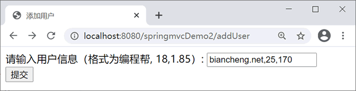
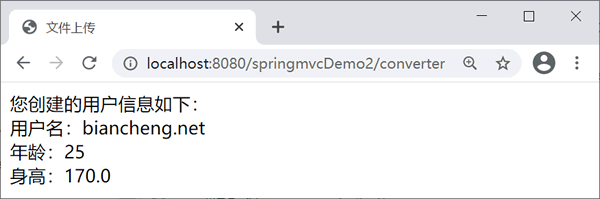

首页 > 编程笔记
Spring MVC类型转换器（Converter）
Spring MVC 框架的 Converter<S，T> 是一个可以将一种数据类型转换成另一种数据类型的接口，这里 S 表示源类型，T 表示目标类型。开发者在实际应用中使用框架内置的类型转换器基本上就够了，但有时需要编写具有特定功能的类型转换器。
例如，用户输入的日期可能有许多种形式，如“December 25,2014”“12/25/2014”和“2014-12-25”，这些都表示同一个日期。默认情况下，Spring 会期待用户输入的日期样式与当前语言区域的日期样式相同。例如，对于美国的用户而言，就是月/日/年的格式。如果希望 Spring 在将输入的日期字符串绑定到 LocalDate 时，使用不同的日期样式，则需要编写一个 Converter，才能将字符串转换成日期。
java.time.LocalDate 类是 Java 8 的一个新类型，用来替代 java.util.Date。还需使用新的 Date/Time API 来替换旧有的 Date 和 Calendar 类。
类型转换是在视图与控制器相互传递数据时发生的。Spring MVC 框架对于基本类型（例如 int、long、float、double、boolean 以及 char 等）已经做好了基本类型转换。
例如需要用户在页面表单中输入信息来创建商品信息。当输入“bianchengbang，18，1.85”时表示在程序中自动创建一个 new User，并将“bianchengbang”值自动赋给 name 属性，将“18”值自动赋给 age 属性，将“1.85”值自动赋给 height 属性。
如果想实现上述应用，需要做以下 5 件事：
例如，用户输入的日期可能有许多种形式，如“December 25,2014”“12/25/2014”和“2014-12-25”，这些都表示同一个日期。默认情况下，Spring 会期待用户输入的日期样式与当前语言区域的日期样式相同。例如，对于美国的用户而言，就是月/日/年的格式。如果希望 Spring 在将输入的日期字符串绑定到 LocalDate 时，使用不同的日期样式，则需要编写一个 Converter，才能将字符串转换成日期。
java.time.LocalDate 类是 Java 8 的一个新类型，用来替代 java.util.Date。还需使用新的 Date/Time API 来替换旧有的 Date 和 Calendar 类。
内置的类型转换器
在 Spring MVC 框架中，对于常用的数据类型，开发者无须创建自己的类型转换器，因为 Spring MVC 框架有许多内置的类型转换器用于完成常用的类型转换。Spring MVC 框架提供的内置类型转换包括以下几种类型。1）标量转换器
| 名称 | 作用 |
|---|---|
| StringToBooleanConverter | String 到 boolean 类型转换 |
| ObjectToStringConverter | Object 到 String 转换，调用 toString 方法转换 |
| StringToNumberConverterFactory | String 到数字转换（例如 Integer、Long 等） |
| NumberToNumberConverterFactory | 数字子类型（基本类型）到数字类型（包装类型）转换 |
| StringToCharacterConverter | String 到 Character 转换，取字符串中的第一个字符 |
| NumberToCharacterConverter | 数字子类型到 Character 转换 |
| CharacterToNumberFactory | Character 到数字子类型转换 |
| StringToEnumConverterFactory | String 到枚举类型转换，通过 Enum.valueOf 将字符串转换为需要的枚举类型 |
| EnumToStringConverter | 枚举类型到 String 转换，返回枚举对象的 name 值 |
| StringToLocaleConverter | String 到 java.util.Locale 转换 |
| PropertiesToStringConverter | java.util.Properties 到 String 转换，默认通过 ISO-8859-1 解码 |
| StringToPropertiesConverter | String 到 java.util.Properties 转换，默认使用 ISO-8859-1 编码 |
2）集合、数组相关转换器
| 名称 | 作用 |
|---|---|
| ArrayToCollectionConverter | 任意数组到任意集合（List、Set）转换 |
| CollectionToArrayConverter | 任意集合到任意数组转换 |
| ArrayToArrayConverter | 任意数组到任意数组转换 |
| CollectionToCollectionConverter | 集合之间的类型转换 |
| MapToMapConverter | Map之间的类型转换 |
| ArrayToStringConverter | 任意数组到 String 转换 |
| StringToArrayConverter | 字符串到数组的转换，默认通过“，”分割，且去除字符串两边的空格（trim） |
| ArrayToObjectConverter | 任意数组到 Object 的转换，如果目标类型和源类型兼容，直接返回源对象；否则返回数组的第一个元素并进行类型转换 |
| ObjectToArrayConverter | Object 到单元素数组转换 |
| CollectionToStringConverter | 任意集合（List、Set）到 String 转换 |
| StringToCollectionConverter | String 到集合（List、Set）转换，默认通过“，”分割，且去除字符串两边的空格（trim） |
| CollectionToObjectConverter | 任意集合到任意 Object 的转换，如果目标类型和源类型兼容，直接返回源对象；否则返回集合的第一个元素并进行类型转换 |
| ObjectToCollectionConverter | Object 到单元素集合的类型转换 |
注意：在使用内置类型转换器时，请求参数输入值与接收参数类型要兼容，否则会报 400 错误。请求参数类型与接收参数类型不兼容问题需要学习输入校验后才可解决。
自定义类型转换器
当 Spring MVC 框架内置的类型转换器不能满足需求时，开发者可以开发自己的类型转换器。例如需要用户在页面表单中输入信息来创建商品信息。当输入“bianchengbang，18，1.85”时表示在程序中自动创建一个 new User，并将“bianchengbang”值自动赋给 name 属性，将“18”值自动赋给 age 属性，将“1.85”值自动赋给 height 属性。
如果想实现上述应用，需要做以下 5 件事：
- 创建实体类。
- 创建控制器类。
- 创建自定义类型转换器类。
- 注册类型转换器。
- 创建相关视图。
示例
本节示例基于《@Controller和@RequestMapping注解》一节创建的 springmvcDemo2 应用。1. 创建实体类
在 net.biancheng.po 包下创建 User 实体类，代码如下。
package net.biancheng.po;
public class User {
private String name;
private Integer age;
private Double height;
/**省略setter和getter方法*/
}
2. 创建控制器类
在 net.biancheng.controller 包下创建 UserController 控制器，代码如下。
package net.biancheng.controller;
import org.springframework.stereotype.Controller;
import org.springframework.ui.Model;
import org.springframework.web.bind.annotation.RequestBody;
import org.springframework.web.bind.annotation.RequestMapping;
import org.springframework.web.bind.annotation.RequestParam;
import org.springframework.web.bind.annotation.ResponseBody;
import net.biancheng.po.User;
@Controller
public class UserController {
@RequestMapping("/addUser")
public String addUser() {
return "addUser";
}
}
创建 ConverterController 控制器，代码如下。
package net.biancheng.controller;
import org.springframework.stereotype.Controller;
import org.springframework.ui.Model;
import org.springframework.web.bind.annotation.RequestMapping;
import org.springframework.web.bind.annotation.RequestParam;
import net.biancheng.po.User;
@Controller
public class ConverterController {
@RequestMapping("/converter")
public String myConverter(@RequestParam("user") User user, Model model) {
model.addAttribute("user", user);
return "showUser";
}
}
3. 创建自定义类型转换器
创建 net.biancheng.converter，在该包下创建自定义类型转换器 UserConverter，代码如下。
package net.biancheng.converter;
import org.springframework.core.convert.converter.Converter;
import org.springframework.stereotype.Component;
import net.biancheng.po.User;
@Component
public class UserConverter implements Converter<String, User> {
@Override
public User convert(String source) {
// 创建User实例
User user = new User();
// 以“，”分隔
String stringvalues[] = source.split(",");
if (stringvalues != null && stringvalues.length == 3) {
// 为user实例赋值
user.setName(stringvalues[0]);
user.setAge(Integer.parseInt(stringvalues[1]));
user.setHeight(Double.parseDouble(stringvalues[2]));
return user;
} else {
throw new IllegalArgumentException(String.format("类型转换失败， 需要格式'编程帮, 18,1.85',但格式是[% s ] ", source));
}
}
}
4. 配置转换器
在 springmvc-servlet.xml 文件中添加以下代码。
<mvc:annotation-driven conversion-service="conversionService" />
<!--注册类型转换器UserConverter -->
<bean id="conversionService" class="org.springframework.context.support.ConversionServiceFactoryBean">
<property name="converters">
<list>
<bean class="net.biancheng.converter.UserConverter" />
</list>
</property>
</bean>
5. 创建相关视图
创建添加用户页面 addUser.jsp，代码如下。
<%@ page language="java" contentType="text/html; charset=UTF-8"
pageEncoding="UTF-8"%>
<!DOCTYPE html PUBLIC "-//W3C//DTD HTML 4.01 Transitional//EN" "http://www.w3.org/TR/html4/loose.dtd">
<html>
<head>
<meta http-equiv="Content-Type" content="text/html; charset=UTF-8">
<title>添加用户</title>
</head>
<body>
<form action="${pageContext.request.contextPath}/converter"
method="post">
请输入用户信息（格式为编程帮, 18,1.85）:
<input type="text" name="user" />
<br>
<input type="submit" value="提交" />
</form>
</body>
</html>
创建显示用户页面 showUser.jsp，代码如下。
<%@ page language="java" contentType="text/html; charset=UTF-8"
pageEncoding="UTF-8"%>
<!DOCTYPE html PUBLIC "-//W3C//DTD HTML 4.01 Transitional//EN" "http://www.w3.org/TR/html4/loose.dtd">
<html>
<head>
<meta http-equiv="Content-Type" content="text/html; charset=UTF-8">
<title>文件上传</title>
</head>
<body>
您创建的用户信息如下：
<br/>
<!-- 使用EL表达式取出model中的user信息 -->
用户名：${user.name } <br/>
年龄：${user.age } <br/>
身高：${user.height }
</body>
</html>
6. 测试
访问地址：http://localhost:8080/springmvcDemo2/addUser，运行结果如下图所示。

addUser.jsp
addUser.jsp

showUser.jsp
showUser.jsp
关注公众号「站长严长生」，在手机上阅读所有教程，随时随地都能学习。内含一款搜索神器，免费下载全网书籍和视频。

微信扫码关注公众号